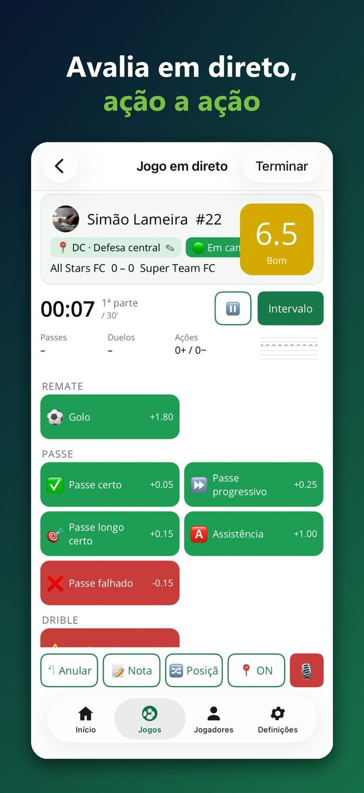
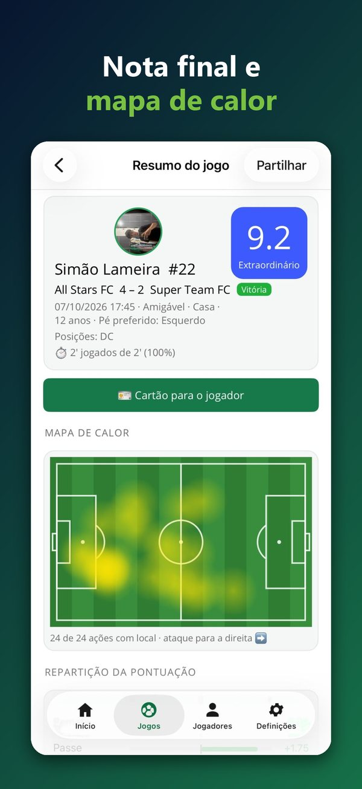
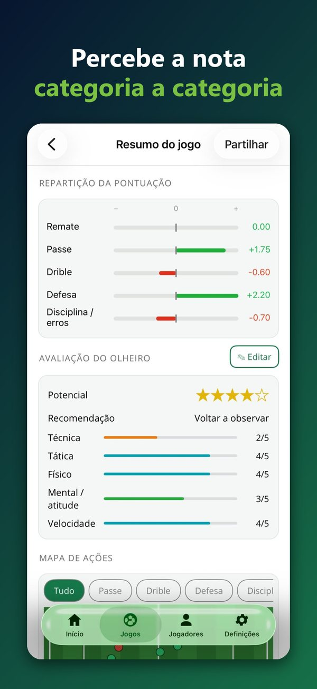
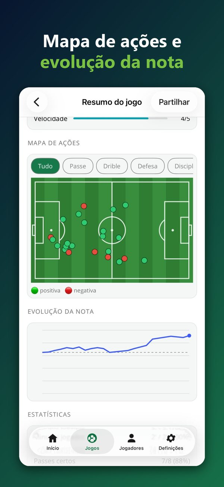
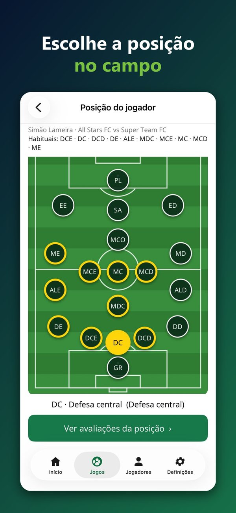
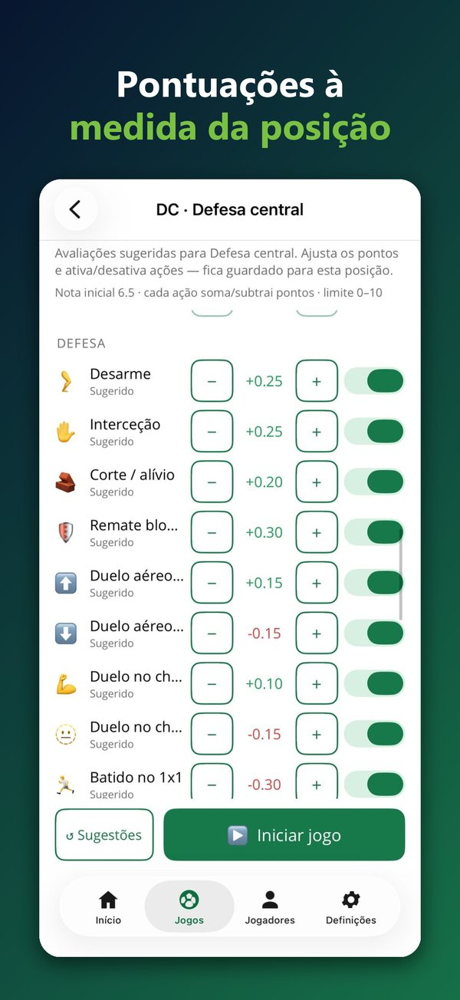
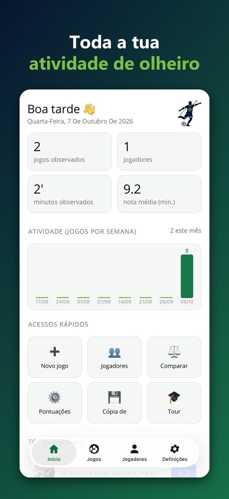

ScoutScore
Avalia jogadores de futebol em direto, ação a ação, com uma nota de 0 a 10, mapas de calor e relatórios. Com comandos de voz, partilha e Player Intelligence. Sem conta, sem anúncios e offline.
Rate football players live, action by action, with a 0–10 rating, heatmaps and reports. With voice commands, sharing and Player Intelligence. No account, no ads, works offline.
Funcionalidades
⚽ Avaliação ao vivo
A nota começa em 6.5 e muda a cada ação: passes, dribles, remates, desarmes, duelos, erros… A ordem das ações não importa, ações repetidas contam menos e o resultado do jogo ajusta a nota; acima de 8 sobe mais devagar, por isso um 9–10 é mesmo raro.
✏️ Corrigir durante o jogo
Lista completa de eventos no ecrã do jogo: troca uma ação registada por engano, corrige o local no campo ou o minuto, ou apaga — a nota é recalculada na hora.
🗺️ Campo à tua medida
Marca onde aconteceu cada ação. Inverte o campo conforme o lado para onde a equipa ataca (troca sozinho na 2.ª parte) e divide-o em terços para veres logo em que setor o jogador está.
🗣️ Comandos de voz
Dita «passe certo, drible e perda de bola» e as ações ficam registadas, sem tirar os olhos do jogo. Pro
📍 Pontos por posição
Ações e pontos sugeridos para cada posição do futebol de 11, ajustáveis à tua maneira de avaliar. Mudaste os pontos? Recalcula os jogos passados com os pontos e a regra da nota atuais, incluindo a nova nota (e repõe os originais quando quiseres).
🏃 Formação
Duração por escalão (Sénior a Sub-11) editável nas Definições e em cada jogo — também a meio do jogo —, titular ou suplente, substituições e minutos jogados.
📊 Relatórios
Avaliação do olheiro, repartição da nota, mapa de calor, mapa de ações e evolução da nota.
🔗 Partilha
Cartão do jogador em imagem com QR code e link interativo do jogo que abre no browser de quem recebe.
🧠 Player Intelligence
Média, evolução, perfil por área, estatísticas por 90' e comparação de até 3 jogadores. Pro
🔒 Privado
Sem conta e sem anúncios. Funciona offline e os dados ficam no teu telemóvel.
Como funciona







Descarrega o ScoutScore
Grátis para Android e iPhone/iPad · Free for Android and iPhone/iPad